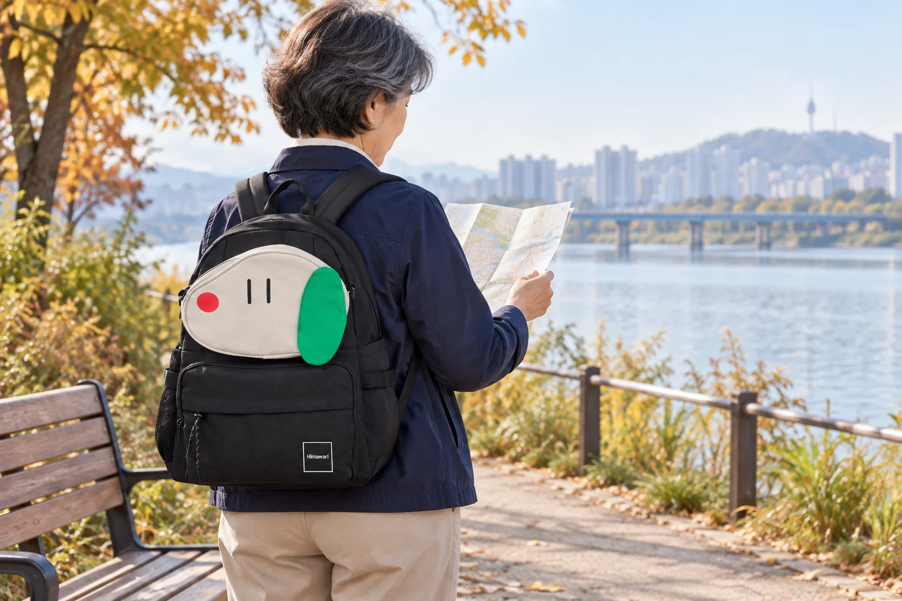

종이 지도를 들고 걷는 날: 백팩에서 펼치고 다시 접는 순서

낯선 동네의 안내소에서 받은 종이 지도에는 화면과 다른 재미가 있습니다. 길 전체를 한 번에 볼 수 있고 가보고 싶은 곳에 작은 표시를 남길 수도 있습니다. 다만 큰 종이를 손에 펼친 채 백팩을 열고 걷기 시작하면 접힌 면이 바뀌거나 지도 끝이 지퍼에 걸리기 쉽습니다. 오늘의 준비는 짐을 더 넣는 일이 아니라, 지도를 꺼낼 순간과 다시 넣을 모양을 미리 정하는 일입니다.
출발 전에 오늘 걸을 부분을 바깥면으로
지도를 한 번 모두 펼쳐 출발점과 목적지, 중간에 확인할 갈림길을 찾습니다. 그다음 원래 접힌 선을 따라 오늘 볼 구역이 바깥에 오도록 접어보세요. 지도의 북쪽 표시와 범례가 어느 면에 있는지도 함께 기억하면 종이를 다시 크게 펼치는 횟수를 줄일 수 있습니다. 너무 작은 크기로 새 접힘을 계속 만들기보다, 접힌 지도가 들어갈 얇은 주머니를 함께 골라두는 편이 종이 가장자리를 정리하기 좋습니다.
길을 확인할 때는 먼저 걸음을 멈춥니다
갈림길 바로 앞이나 사람의 이동이 많은 통로에서 지도를 펼치지 말고, 주변 흐름을 방해하지 않는 자리를 찾습니다. 백팩 지퍼를 열고 지도만 꺼낸 뒤 가방을 다시 닫으세요. 현재 위치를 주변 안내와 대조하고 다음에 멈출 지점까지 살펴본 다음 다시 걷습니다. 종이 지도에는 제작 이후 바뀐 길이나 공사 정보가 없을 수 있으므로 실제 현장 표지와 이용 안내를 우선합니다.
다시 넣기 전에 모서리 네 곳을 봅니다
지도 끝을 먼저 주머니에 밀어 넣으면 다른 접힌 면이 뒤따라 들어오면서 구겨질 수 있습니다. 두 손으로 원래 모양을 잡고 느슨하게 벌어진 면을 정리한 뒤 넣어보세요. 펜이나 열쇠와 같은 칸에 맨 종이를 넣기보다 지도만 감싸는 얇은 커버를 활용할 수 있습니다. 커버까지 포함한 크기가 포켓 입구를 자연스럽게 통과하는지 확인하고, 지퍼로 종이를 눌러 닫지 않습니다.
집에 돌아오면 다음에 쓸 표시만 남깁니다
방문한 곳과 다음에 가보고 싶은 곳의 표시를 구분해두면 같은 지도를 다시 사용할 때 도움이 됩니다. 메모가 있는 종이는 가방 안의 오래된 안내문과 섞지 말고 따로 보관하세요. 젖은 지도를 접어 둔 채 가방에 남기지 않고 상태부터 확인합니다. 사진 속 가방은 외부 크기 가로 32 × 세로 42 × 폭 13cm의 No.0423 그린 옵션을 참조했습니다. 지도 수납이 검증된 장면은 아니므로 실제 접힌 크기와 사용할 포켓을 비교해 주세요.
참고·안내
- Himawari No.0423 제품 정보
- 실제 Himawari No.0423 그린 옵션의 원본과 확인된 외부 치수를 참조한 AI 착용 연출입니다. 인물·장소·지도는 가상이며 실제 고객 사진이나 실측 착용 자료가 아닙니다.
자주 묻는 질문
종이 지도를 계속 손에 들고 걸어도 될까요?
이동 중 계속 들여다보기보다 안전하게 멈춘 자리에서 다음 구간을 확인한 뒤 접어 두면 주변을 살피기 쉽습니다.
사진 속 백팩에 안내 지도가 모두 들어가나요?
지도의 규격과 접는 방식, 커버에 따라 다릅니다. 실제 접힌 크기를 포켓 입구와 비교해 확인하세요.